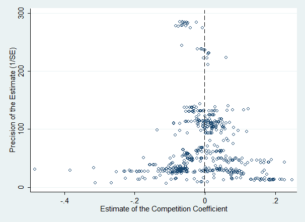

Abstract
The theoretical literature gives conflicting predictions on how bank competition should affect financial stability, and dozens of researchers have attempted to evaluate the relationship empirically. We collect 598 estimates of the competition-stability nexus reported in 31 studies and analyze the literature using meta-analysis methods. We control for 35 aspects of study design and employ Bayesian model averaging to tackle the resulting model uncertainty. Our findings suggest that the definition of financial stability and bank competition used by researchers influences their results in a systematic way. The choice of data, estimation methodology, and control variables also affects the reported coefficient. We find evidence for moderate publication bias. Taken together, the estimates reported in the literature suggest little interplay between competition and stability, even when corrected for publication bias and potential misspecifications.
Fig: The most precise estimates of the competition-stability nexus are close to zero
Reference: Diana Zigraiova and Tomas Havranek (2016), "Bank Competition and Financial Stability: Much Ado About Nothing?" Journal of Economic Surveys 30(5), 944-981.